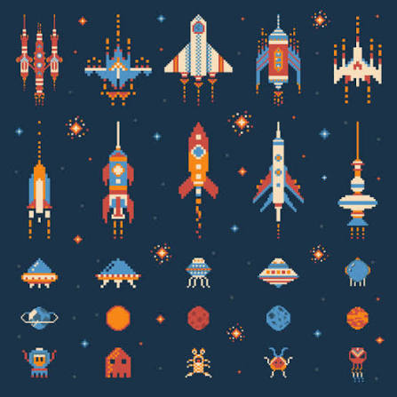

Supplied reference

Compact silhouettes, high small-scale readability, and the navy/teal/coral/amber relationship. No ship designs or pixel geometry will be copied.
An original clean-vector identity for Venture Star: optimistic frontier exploration, crisp mobile silhouettes, balanced cool and warm colour, and Deep Survey radar grammar for navigation.

Compact silhouettes, high small-scale readability, and the navy/teal/coral/amber relationship. No ship designs or pixel geometry will be copied.
Bold navy outlines, cream hull planes, teal navigation surfaces, amber energy, and coral urgency.
Broken range contours, radar rings, and directional signals used selectively in maps, sensors, and targeting.
| Batch | Asset family | Count | Size | Complexity |
|---|---|---|---|---|
| A01 | Brand logo and compass-star mark | 2 | 512 | Intricate |
| A02 | Starfields, loading orbit, compatibility art | 5 | 64–1024 | Standard |
| A03 | Player flagship states | 6 | 128 | Intricate |
| A04 | Rival scout states | 4 | 128 | Intricate |
| A05 | Orbital shipyard states | 4 | 256 | Intricate |
| A06 | Rocky, oceanic, verdant, arid, ice planets | 5 | 256 | Intricate |
| A07 | Colour-independent ownership patterns | 3 | 32 | Simple |
| A08 | Ore, metal, crystal node states | 9 | 64 | Standard |
| A09 | Asteroid-field tiles and warning | 5 | 256 | Standard |
| A10 | Abandoned cargo and treasure discoveries | 14 | 128 | Intricate |
| A11 | Flight, mining, and station-lock effects | 11 | 64–128 | Standard |
| A12 | Sensor and layered-damage effects | 10 | 64–256 | Standard |
| A13 | Pulse and consumable-bomb effects | 7 | 32–64 | Standard |
| A14 | Small and large explosion frames | 16 | 64/256 | Standard |
| A15 | Strategic and reduced-motion effects | 8 | 64–256 | Standard |
| A16 | Complete HUD icon family | 49 | 32 | Simple |
| A17 | Danger, fog, sensor, route, and objective map language | 14 | 32–256 | Simple/standard |
| A18 | Panels, buttons, meters, tooltip, toast, focus | 18 | 32–128 | Simple/standard |